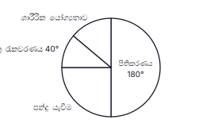
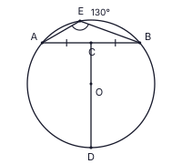
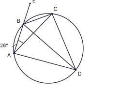
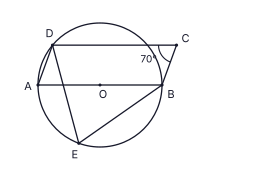
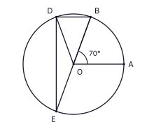

A කොටස
සියලුම ප්රශ්නවලට මෙම පත්රයේම පිළිතුරු ලියන්න. (එකකට ලකුණු 2; අවශ්ය තැන්වල π = 22/7 ලෙස ගන්න)
නිමේෂාගේ උයනේ බිම් කොටසක් සමතලා කිරීමට කම්කරුවන් 6 දෙනෙකුට දින 20ක් ගත වේ. සියලුම කම්කරුවන් එකම වේගයෙන් වැඩ කරයි. එම වැඩය දින 8කින් නිම කිරීමට තවත් කම්කරුවන් කී දෙනෙකු යෙදවිය යුතුද?
රූපයේ AB ∥ CD වේ. ∠AED = 150° ද ∠EDC = 70° ද නම්, ∠BAE (x) හි විශාලත්වය සොයන්න.

සුළු කරන්න: 12x + 35x − 310x
සෘජු ත්රිකෝණාකාර ප්රිස්මයක මුහුණතක් විය නොහැක්කේ පහත සඳහන් ඒවායින් කුමක්ද? නිවැරදි පිළිතුර ඉදිරියෙන් ✓ ලකුණ යොදන්න.
(i) සෘජුකෝණාස්රයක් (ii) සමචතුරස්රයක් (iii) ත්රපීසියමක්
ක්රිකට් සමාජයේ සාමාජිකයන් කැමතිම පුහුණු ක්රියාකාරකම දැක්වෙන වට ප්රස්තාරය රූපයේ දැක්වේ. පිතිකරණයට කැමති සාමාජිකයන් 36 දෙනෙකි. ක්ෂේත්ර රැකවරණයට කැමති සාමාජිකයන් ගණන සොයන්න.

O කේන්ද්රය වූ වෘත්තයේ DOC සරල රේඛාවකි. C යනු AB ජ්යාහි මධ්ය ලක්ෂ්යයයි. ∠AEB = 130° නම් ∠CDB හි විශාලත්වය සොයන්න.

සාධක සොයන්න: 3x2 − 48
100.6021 = 4 බව දී ඇත. lg 400 හි අගය සොයන්න.
රූපයේ AB යනු තිරස් බිමක සිටුවා ඇති සිරස් කණුවකි. B හි කුරුල්ලෙකු සිටින අතර බිම C හි පූසෙකු සිටී. ∠BAC = 90° වේ. කැඩි ඉරි තිරස් රේඛා වේ. රූපයේ, පූසාගෙන් කුරුල්ලාට ඇති ආරෝහණ කෝණය a ලෙසද, කුරුල්ලාගෙන් පූසාට ඇති අවරෝහණ කෝණය b ලෙසද ලකුණු කර, a හා b අතර සම්බන්ධය ලියන්න.

උස, පාද අරය r මෙන් 5 ගුණයක් වූ සිලින්ඩරාකාර මල් පෝච්චියක් ඇත. එහි වක්ර පෘෂ්ඨය ආවරණයට අවශ්ය කඩදාසි වර්ගඵලයේ සහ වෘත්තාකාර පතුල ආවරණයට අවශ්ය කඩදාසි වර්ගඵලයේ අනුපාතය සුළුම ආකාරයෙන් සොයන්න. (සිලින්ඩරයක වක්ර පෘෂ්ඨයේ වර්ගඵලය = 2πrh)
කවින්දු මුහුණත් හතර බැගින් 2, 3, 5, 7 ලෙස අංක කර ඇති සමතුලිත චතුස්තලක දාදු දෙකක් එකවර උඩ දමයි. පතුලේ ඇති මුහුණත් දෙකේ අංක එකතුව 10 වීමේ සම්භාවිතාව සොයන්න.
රූපයේ ABC සරල රේඛාවකි. ∠DAB = 35° වේ. සමාන සංඛ්යාවක ඉර ලකුණු යෙදූ පාද දිගින් සමාන වේ. x හි අගය සොයන්න.

ξ = {x : 1 ≤ x ≤ 10, x නිඛිලයකි}, A = {ξ හි ප්රථමක සංඛ්යා} සහ B = {ξ හි 3 හි ගුණාකාර} යැයි ගනිමු. නිවැරදි ප්රකාශය ඉදිරියෙන් ✓ ලකුණ යොදන්න.
(i) A ∩ B = {3} (ii) A ∪ B = {2, 3, 5, 6, 7} (iii) n(A′) = 5
සුළු කරන්න: (9a4b × 4a2b3) ÷ 6a3b2
ගුණෝත්තර ශ්රේඪියක දෙවන පදය −40 ද තුන්වන පදය −20 ද නම්, පස්වන පදය සොයන්න.
රූපයේ ABCD වෘත්ත චතුරස්රයක් වන අතර BD මගින් ∠ADC සමච්ඡේදනය වේ. AB, E දක්වා දික් කර ඇත. ∠BAC = 26° නම්, ∠CBE හි විශාලත්වය සොයන්න.

12a2b3, 18a3b2 සහ 30ab4 හි මහා පොදු සාධකය (ම.පො.සා.) සොයන්න.
උස h වූ සෘජු ත්රිකෝණාකාර ප්රිස්මයක පාදයේ වර්ගඵලය 2464 cm2 කි. එම උස h ම ඇති සිලින්ඩරයක පරිමාව ප්රිස්මයේ පරිමාවට සමාන වේ. සිලින්ඩරයේ පාද අරය r සොයන්න. (සිලින්ඩරයක පරිමාව = πr2h)
රූපයේ ABC ත්රිකෝණයේ AB හා AC පාදවල මධ්ය ලක්ෂ්ය පිළිවෙළින් D හා E වේ. ∠ADE = 90°, AD = 5 cm හා DE = 12 cm වේ. BCED ත්රපීසියමේ පරිමිතිය සොයන්න.

(2, 7) හා (5, 1) ලක්ෂ්ය හරහා යන සරල රේඛාවේ සමීකරණය සොයන්න.
රූපයේ O යනු වෘත්තයේ කේන්ද්රය වන අතර AOB සරල රේඛාවකි. A, B, D හා E ලක්ෂ්ය වෘත්තය මත පිහිටා ඇත. ABCD සමාන්තරාස්රයක් වන අතර ∠BCD = 70° වේ. ∠DEB හි විශාලත්වය සොයන්න.

සචිනි මුදලක් වසර 2ක් සඳහා, වසර අවසානයේදී පොලිය එකතු වන පරිදි වාර්ෂික 4%ක වැල් පොලියට ආයෝජනය කළාය. දෙවන වසරේ පොලිය රු. 2 600ක් ද වසර 2 අවසානයේ මුළු මුදල රු. 67 600ක් ද විය. ඇය ආයෝජනය කළ මුදල සොයන්න.
රූපයේ O කේන්ද්රය වූ වෘත්තයේ OA ∥ BD වේ. ∠AOB = 70° නම්, ∠BED හි විශාලත්වය සොයන්න.

4x + 15 > 3 අසමානතාව විසඳා එය තෘප්ත කරන x හි ඍණ නිඛිල අගයන් ලියන්න.
රූපයේ AB රේඛාව B හිදී වෘත්තයකට ස්පර්ශ වන අතර AC රේඛාව ද එම වෘත්තයටම ස්පර්ශ වේ. එම වෘත්තයේ කේන්ද්රය O සොයා ගැනීමට අවශ්ය නිර්මාණයේ කොටසක් රූපයේ දැක්වේ. නිර්මාණ පිළිබඳ ඔබේ දැනුම යොදා ගනිමින් නිර්මාණය සම්පූර්ණ කර කේන්ද්රය O ලෙස ලකුණු කරන්න.